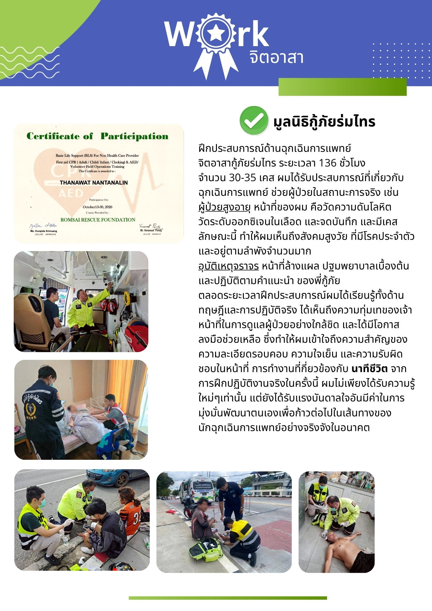
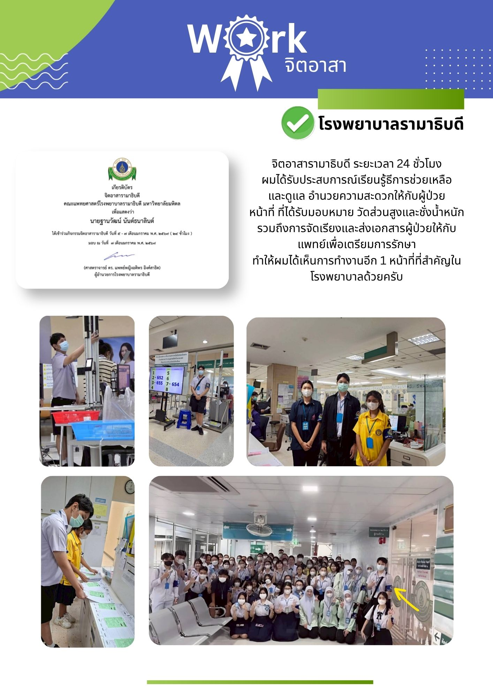
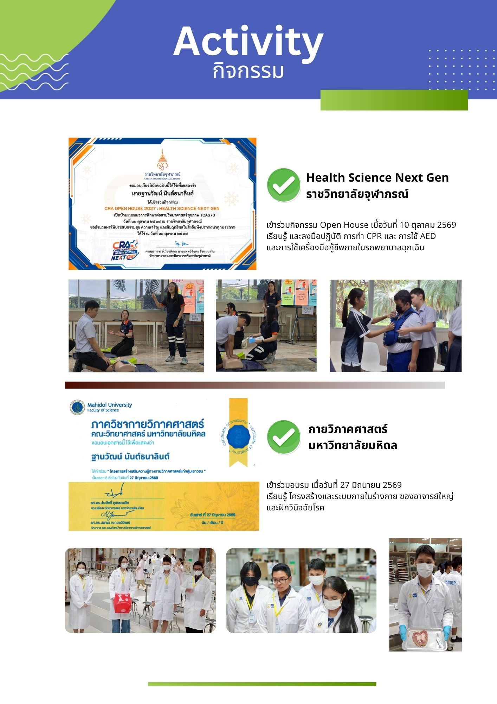
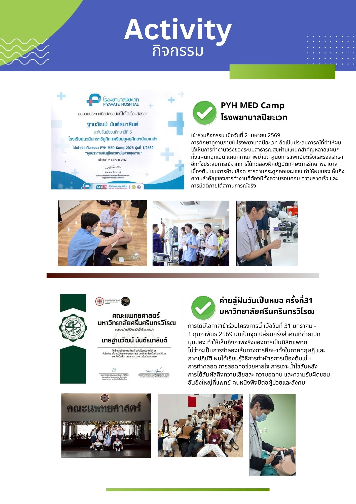
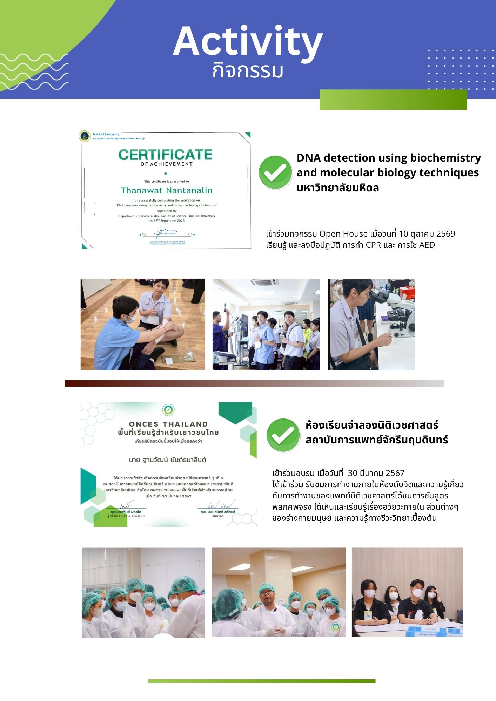
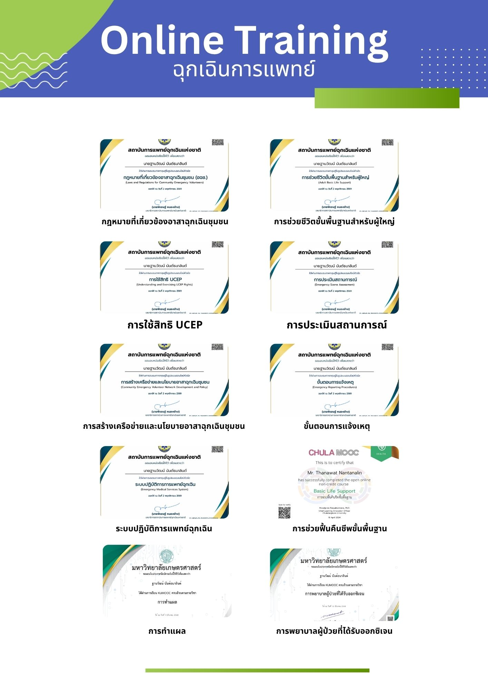

คณะแพทยศาสตร์ สาขาวิชาปฏิบัติการฉุกเฉินการแพทย์
มหาวิทยาลัยสงขลานครินทร์ (Prince of Songkla University)
เลือกหัวข้อเพื่อเข้าชมผลงานและเกียรติบัตร
มูลนิธิกู้ภัยร่มไทร
ฝึกประสบการณ์ด้านฉุกเฉินการแพทย์ ระยะเวลา 136 ชั่วโมง (จำนวน 30-35 เคส)

รายละเอียดการปฏิบัติงาน
ฝึกประสบการณ์ด้านฉุกเฉินการแพทย์ จิตอาสากู้ภัยร่มไทร ระยะเวลา 136 ชั่วโมง จำนวน 30-35 เคส ได้รับประสบการณ์ช่วยผู้ป่วยในสถานการณ์จริง:
- ผู้ป่วยสูงอายุ: วัดความดันโลหิต วัดระดับออกซิเจนในเลือด และจดบันทึกสัญญาณชีพ
- อุบัติเหตุจราจร: ล้างแผล ปฐมพยาบาลเบื้องต้น และปฏิบัติตามคำแนะนำของพี่กู้ภัย
สิ่งที่ได้เรียนรู้
เรียนรู้ทั้งด้านทฤษฎีและการปฏิบัติจริง เข้าใจถึงความสำคัญของความละเอียดรอบคอบ ความใจเย็น และความรับผิดชอบในหน้าที่การทำงานที่เกี่ยวข้องกับ "นาทีชีวิต" สร้างแรงบันดาลใจในการมุ่งมั่นสู่เส้นทางนักฉุกเฉินการแพทย์ในอนาคต
โรงพยาบาลรามาธิบดี
คณะแพทยศาสตร์โรงพยาบาลรามาธิบดี มหาวิทยาลัยมหิดล (ระยะเวลา 24 ชั่วโมง)

บทบาทหน้าที่จิตอาสา
เข้าร่วมกิจกรรมจิตอาสารามาธิบดี ระยะเวลา 24 ชั่วโมง (วันที่ 5 - 7 มกราคม พ.ศ. 2569) เรียนรู้วิธีการช่วยเหลือ ดูแล และอำนวยความสะดวกให้กับผู้ป่วยภายในโรงพยาบาล:
- วัดส่วนสูงและชั่งน้ำหนักผู้ป่วยก่อนเข้ารับการตรวจ
- จัดเรียงและนำส่งเอกสารผู้ป่วยให้กับแพทย์เพื่อเตรียมการรักษา
ประสบการณ์ที่ได้รับ
ทำให้ได้เห็นการทำงานอีกหนึ่งหน้าที่สำคัญในระบบบริการสุขภาพของโรงพยาบาล การสื่อสารและดูแลผู้ป่วยด้วยความใส่ใจและเป็นระบบ
Health Science Next Gen & กายวิภาคศาสตร์
ราชวิทยาลัยจุฬาภรณ์ และ คณะวิทยาศาสตร์ มหาวิทยาลัยมหิดล

1. Health Science Next Gen ราชวิทยาลัยจุฬาภรณ์
10 ตุลาคม 2569เข้าร่วมกิจกรรม CRA Open House 2027 เรียนรู้และลงมือปฏิบัติการทำ CPR, การใช้เครื่องกระตุกหัวใจไฟฟ้าอัตโนมัติ (AED) และการใช้งานเครื่องมือกู้ชีพภายในรถพยาบาลฉุกเฉิน
2. กายวิภาคศาสตร์ มหาวิทยาลัยมหิดล
27 มิถุนายน 2569เข้าร่วมอบรมโครงการสร้างเสริมความรู้ทางกายวิภาคศาสตร์ ภาควิชากายวิภาคศาสตร์ คณะวิทยาศาสตร์ มหาวิทยาลัยมหิดล เรียนรู้โครงสร้างและระบบภายในร่างกายของอาจารย์ใหญ่ และฝึกการวินิจฉัยโรค
PYH MED Camp & ค่ายสู่ฝันวันเป็นหมอ ครั้งที่ 31
โรงพยาบาลปิยะเวท และ คณะแพทยศาสตร์ มหาวิทยาลัยศรีนครินทรวิโรฒ

1. PYH MED Camp โรงพยาบาลปิยะเวท
2 เมษายน 2569ศึกษาดูงานระบบสาธารณสุขผ่านแผนกฉุกเฉิน แผนกกายภาพบำบัด ศูนย์การแพทย์มะเร็งและรังสีรักษา และฝึกปฏิบัติทักษะการรักษาพยาบาลเบื้องต้น เช่น การห้ามเลือด การดามกระดูกคอและแขน
2. ค่ายสู่ฝันวันเป็นหมอ ครั้งที่ 31 มศว
31 มกราคม - 1 กุมภาพันธ์ 2569จำลองเส้นทางการศึกษาแพทย์ทั้งภาคทฤษฎีและภาคปฏิบัติ เรียนรู้หัตถการเบื้องต้น เช่น การทำคลอด การสอดท่อช่วยหายใจ และการเจาะน้ำไขสันหลัง
DNA Detection & ห้องเรียนจำลองนิติเวชศาสตร์
มหาวิทยาลัยมหิดล และ สถาบันการแพทย์จักรีนฤบดินทร์

1. DNA Detection Using Biochemistry and Molecular Biology Techniques
ภาควิชาชีวเคมี คณะวิทยาศาสตร์ ม.มหิดลเข้าร่วมอบรมเชิงปฏิบัติการด้านเทคนิคชีวเคมีและอณูชีววิทยาในการตรวจวิเคราะห์สารพันธุกรรม (DNA) และทักษะการปฏิบัติการทางวิทยาศาสตร์การแพทย์
2. ห้องเรียนจำลองนิติเวชศาสตร์ สถาบันการแพทย์จักรีนฤบดินทร์
30 มีนาคม 2567เข้าร่วมชมการทำงานภายในห้องดับจิต เรียนรู้บทบาทของแพทย์นิติเวชศาสตร์ ชมการชันสูตรพลิกศพจริง และศึกษาอวัยวะภายในส่วนต่างๆ ของร่างกายมนุษย์
การอบรมออนไลน์ด้านฉุกเฉินการแพทย์ (10 หลักสูตร)
สถาบันการแพทย์ฉุกเฉินแห่งชาติ (สพฉ.), CHULA MOOC และ KUMOOC มหาวิทยาลัยเกษตรศาสตร์

รายชื่อหลักสูตรที่ผ่านการอบรม
- 1 กฎหมายที่เกี่ยวข้องอาสาฉุกเฉินชุมชน (สพฉ.)
- 2 การช่วยชีวิตขั้นพื้นฐานสำหรับผู้ใหญ่ (สพฉ.)
- 3 การใช้สิทธิ UCEP (สพฉ.)
- 4 การประเมินสถานการณ์ (สพฉ.)
- 5 การสร้างเครือข่ายและนโยบายอาสาฉุกเฉินชุมชน (สพฉ.)
- 6 ขั้นตอนการแจ้งเหตุ (สพฉ.)
- 7 ระบบปฏิบัติการการแพทย์ฉุกเฉิน (สพฉ.)
- 8 การช่วยฟื้นคืนชีพขั้นพื้นฐาน Basic Life Support (CHULA MOOC)
- 9 การทำแผล (KUMOOC มหาวิทยาลัยเกษตรศาสตร์)
- 10 การพยาบาลผู้ป่วยที่ได้รับออกซิเจน (KUMOOC ม.เกษตรศาสตร์)